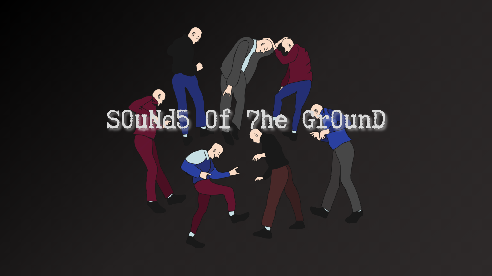

Настоящий бит
Глубокий и мощный грув, который заставляет сердце биться в такт.
Доброград · RP Radio · 24/7
«I feel the beat coming from the ground — is that S0uNd5 0f 7he Gr0unD?»
Габба-радио, которое не останавливается. Настоящий бит, культовые треки и атмосфера вечного рейва — 24/7 из Доброграда.

On airО радио
Никаких пауз, никаких компромиссов. Только габба, хардкор-техно и энергия, которой хватит на весь Доброград.
Глубокий и мощный грув, который заставляет сердце биться в такт.
От легенд жанра до свежих релизов, которые взорвут танцпол.
Лучшие диджеи мира играют для вас без перерывов — 24 часа в сутки.
Бесконечная энергия, позитив и атмосфера, из которой не хочется уходить.
История радио
В одном из забытых уголков интернета, среди множества радиостанций округи Доброграда, появился уникальный проект — S0uNd5 0f 7he Gr0unD.
С самого начала радио привлекло внимание своей уникальной атмосферой и непрерывным потоком энергичной музыки. В эфире звучали мощные габба-биты и хардкор-техно, которые быстро нашли отклик у слушателей. Люди со всего мира начали подключаться к трансляциям, наслаждаясь бескомпромиссным звуком и энергией.
Благодаря страсти и упорству создателя радио росло и развивалось. Слушатели стали присылать свои треки и миксы, а также делиться историями о том, как габба изменила их жизнь.
Сегодня это не просто радио. Это место, где всегда звучит настоящий бит.
S0uNd5 0f 7he Gr0unD — это культовые треки и эксклюзивные миксы, атмосфера вечного рейва и сообщество, которое продолжает расти, объединяя всех любителей габбы по всей округе Доброграда.
Эфир не останавливается с 2024 года
Плейлист
Актуальный сборник треков радио. Состав обновляется — следите за новинками в сообществе.
Открыть плейлист11 / 11 треков
Ничего не нашлось. Попробуйте другое название.
Сообщество
Присоединяйтесь к нашему сообществу: предлагайте музыку для эфира, следите за обновлениями плейлиста и ощутите мощь габбы на себе.
S0uNd5 0f 7he Gr0unD DiscordВедущий
Hera23#0017
Основатель и голос радио. Идеи, треки и коллабы — сюда.